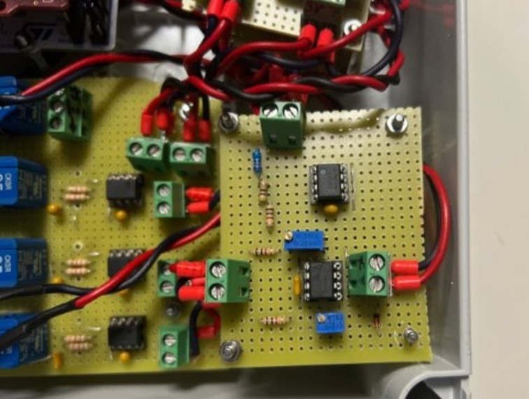
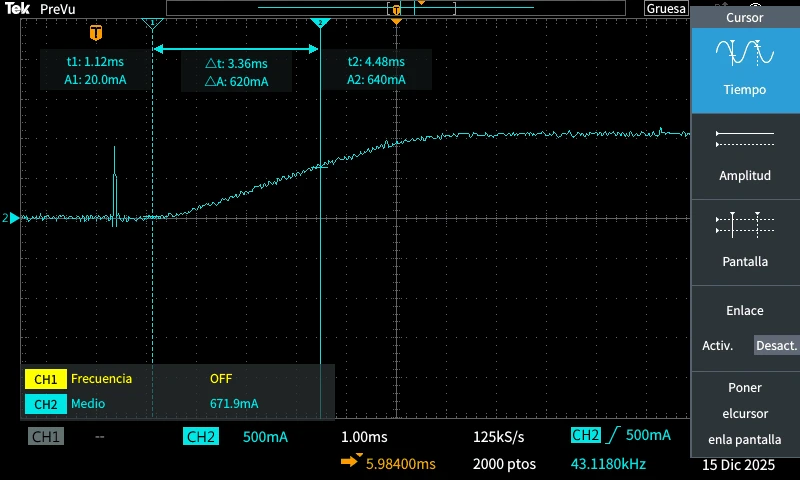
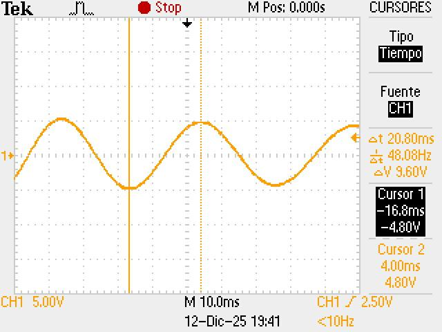
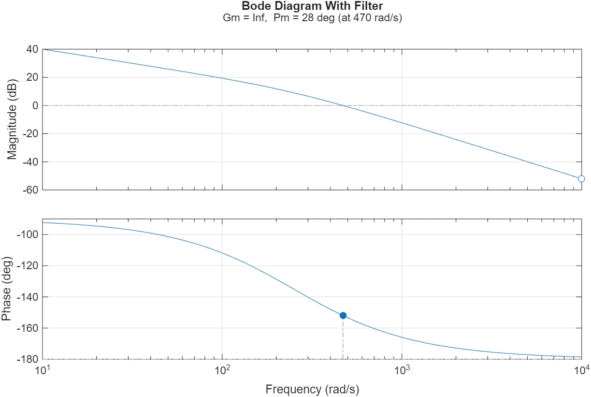
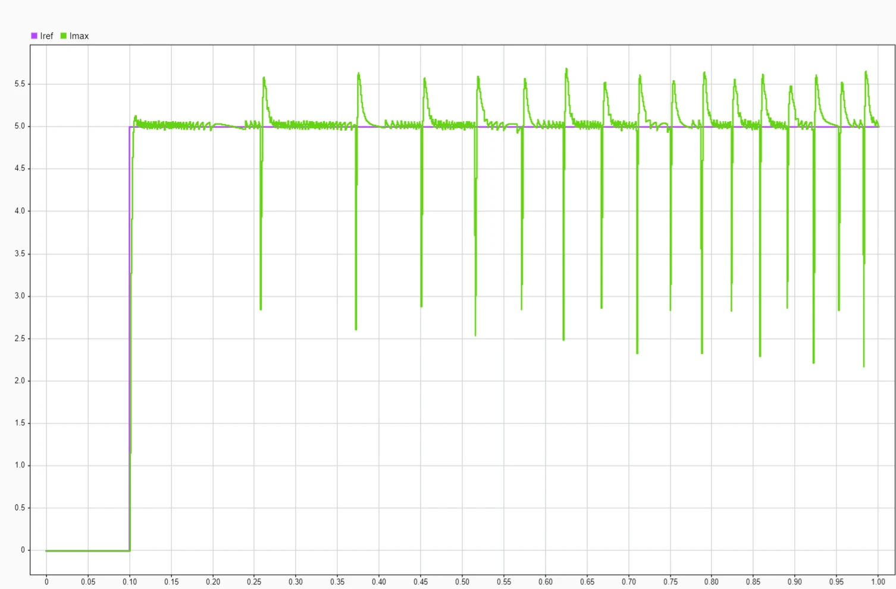
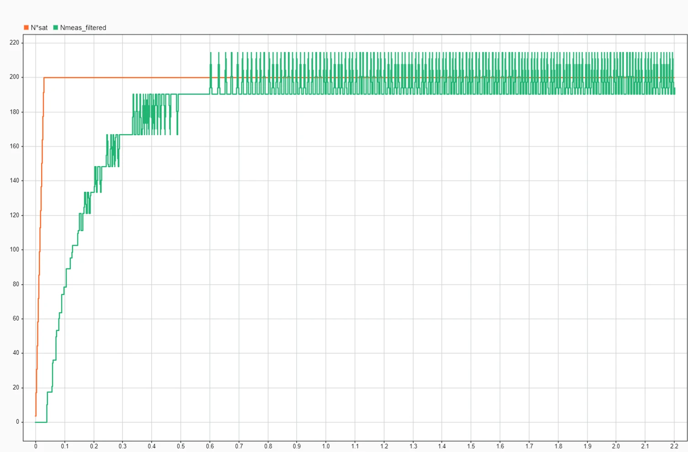
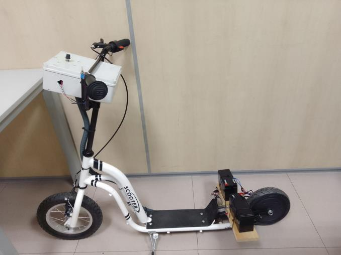

BLDC motor control for an electric scooter
I designed the measurement boards, characterised the motor and implemented the current and speed control on an STM32.
- Magnets, 30 (15 pole pairs)
- Hall sensors, 3 (90 edges per turn)
- Stator winding, 3-phase
- Axle
- Drawing, not to scale
- τ = 3.36 ms
- motor time constant, measured
- τcl = 1 ms
- current loop on an STM32
- 15
- pole pairs
- 90
- Hall edges per turn
My part of the drive
The hub motor and the IFX007T inverter were given. I designed and sized the measurement boards and did the control between them on an STM32: two PI controllers in cascade, a back-EMF feed-forward, a low-pass filter on the measured current and a speed estimate from the Hall sensors.
The current board carries the Hall-effect current sensors, resistor voltage dividers and op-amp buffers, soldered by hand on perfboard. To reduce electromagnetic noise I used twisted wiring, minimum loop areas between signal and ground, and a separate ground for each Hall output.
| Item | Description | By |
|---|---|---|
| 1 | Magnets, 30 (15 pole pairs) | given, hub motor |
| 2 | Hall sensors, 3 (90 edges per turn) | given, hub motor |
| 3 | Stator winding, 3-phase | given, hub motor |
| 4 | Axle | given, hub motor |
| 5 | IFX007T inverter shield, 10 kHz PWM | given |
| 6 | Measurement boards: voltages, phase currents, Hall signals | Peru Mendivil |
| 7 | Motor characterisation: R, L, τ, Kem, damping | Peru Mendivil |
| 8 | Current and speed control on the STM32 | Peru Mendivil |
| 9 | Battery charger | other team members |

- Current board: four Hall-effect current sensors, one per phase and one on the inverter DC bus
- Conditioning board for the sensor outputs to the STM32
Measuring the motor
For R and L the rotor is locked, so there is no back-EMF. A voltage step then gives a first-order current response, and the time constant is the time to reach 63.2 % of the final value. I measured τ = 3.36 ms on the scope, and L = R·τ. The same test on the Simulink motor gave 3.37 ms.


| Parameter | Value | How |
|---|---|---|
| Phase R (Rs) | 0.316 Ω | 0.483 V / 1.02 A, rotor locked |
| Phase L (Ls) | 1.06 mH | L = R·τ |
| Time constant τ | 3.36 ms | scope, 63.2 % of the step |
| Pole pairs | 15 | Hall cycles per turn |
| Kem | 0.0318 V·s/rad | 4.8 V back-EMF at 24 Hz |
| Damping | 0.014 N·m·s | fitted to 154 / 194 / 293 rpm at 8 / 10 / 15 V |
| Inertia | 0.02 kg·m² | wheel, 4 kg, r = 0.1 m; 0.82 with an 80 kg rider |
Why the control runs every 0.5 ms
Rev A0.1 ms → 0.5 ms per control step
The control first ran at 10 kHz. The speed loop measured time by counting the calls to the control function, and that count fluctuated and dropped as the scooter went faster: the STM32 could not finish the calculations in 0.1 ms. We checked it with the professor and reduced the control rate to 2 kHz (0.5 ms).
The limit of the 0.5 ms sampling
With Ti = L/R the PI zero cancels the motor pole and the closed loop is first order. I chose τcl = 1 ms, ten times the period of the 10 kHz inverter, which gives Kp = L/τcl = 1.06.
With that sampling, the current loop overshoots above Kp ≈ 2 and becomes unstable above Kp ≈ 3.9. Move the gain.
- Loop
- No overshoot
- Peak current
- 5.0 A
Unstable above Kp ≈ 3.9 with Ts = 0.5 ms
Current step to 5 A, PI every 0.5 ms. Model with the measured R and L. One column per 0.5 ms sample; dots mark the samples.
On the scooter I kept Kp = 1.06 and made Ti twenty times larger (67 ms). The response is slower, but more stable with the noise in the current measurement.
Current filter and phase margin
The phase current measured with the Hall sensors still had noise, so I added a first-order low-pass filter on the measurement. The filter adds phase lag inside the loop. Without it the phase margin is 90°.
I chose the lowest cut-off that kept an acceptable margin: 250 rad/s, with 28° at 470 rad/s. In the tests, a lower cut-off made the loop unstable.

Speed from the Hall sensors
There is no encoder. The three Hall sensors give 6 edges per electrical cycle, so with 15 pole pairs there are 90 edges per turn. At each edge the STM32 calculates ω = (2π/90)/Δt and keeps the value until the next edge. At 200 rpm there is a new value every 3.3 ms; at 20 rpm, only every 33 ms.
The speed controller is a PI with acceleration feed-forward and anti-windup (Kp = 0.0177 A/rpm, Ti = 2.0 s). Its output is the current reference of the current loop.
On the scooter
In the complete Simulink model, the current follows a 5 A step within a few milliseconds and recovers after each commutation. The speed reaches 200 rpm in about 0.6 s.



- Measurement boards and STM32, in the box on the handlebar
- Two 12 V batteries in series, on a wooden base at the rear of the deck
- Hub motor, in the rear wheel
On the scooter, the drive was tested on the floor: it could be driven, accelerated and braked correctly.